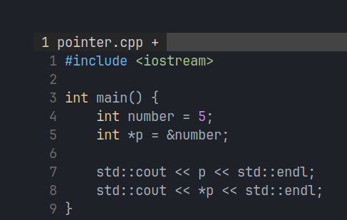
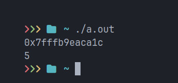

Pointers
Pointers are basically variables that, well, point somewhere. This somewhere is usually a memory address associated with another variable. To understand things a bit better, it's better to look at an example.
The example above shows the pointer syntax in C++. Although this example is in C++, you can follow along in your preferred language(that has pointers!). We defined an integer variable with value 5, then we defined another variable, which is a pointer to an integer, that has the memory address of the integer variable "number". Notice how I said "pointer to variable". This is because pointers are what's called "Compound Data Types", which essentially means that they are defined in terms of other data types. So, for example, a pointer with the memory address of a character variable would be a pointer to a character.
You can see the results to the previous code in the image above. The first line in the results is what happens when the pointer is output to the terminal as it is. This number is the memory address of whatever the pointer is pointing to. The second line is what happpens when we output the pointer to the terminal after dereferncing it. Dereferencing basically means telling the compiler that we want to access what's inside the address stored inside the pointer. In this case, that address stores an integer variable.